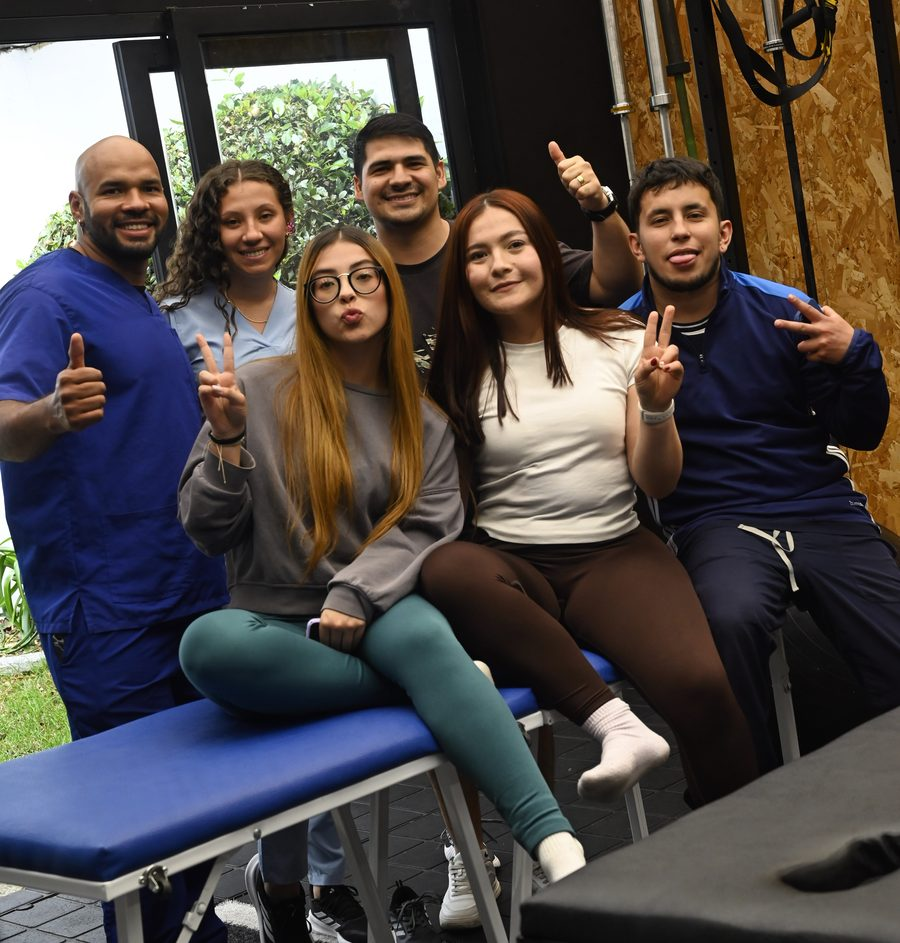

1
Módulo virtual · clases pregrabadas
Introducción a FISIO 2.0 y bases de dosificación del ejercicio terapéutico
Contenido virtual sobre la teoría y las bases de lo que verás en la parte presencial.
- Irradiación muscular y contracción-relajación.
- Cargas isométricas, excéntricas y concéntricas según los tiempos biológicos.
- Fundamentos de la terapia manual y manejo de la velocidad.
- Repaso anatómico de columna cervical, dorsal y lumbar con modelo anatómico 3D.
- Clases completas de ejercicio terapéutico y terapia manual.
- Bonus: caso clínico de tendinopatía rotuliana en jugador de baloncesto.